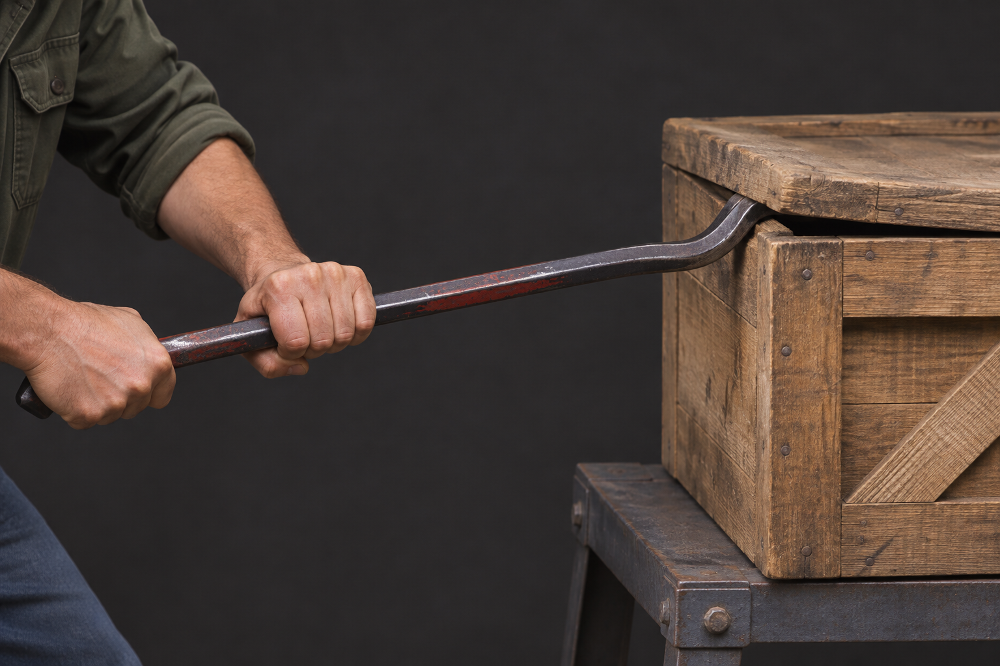
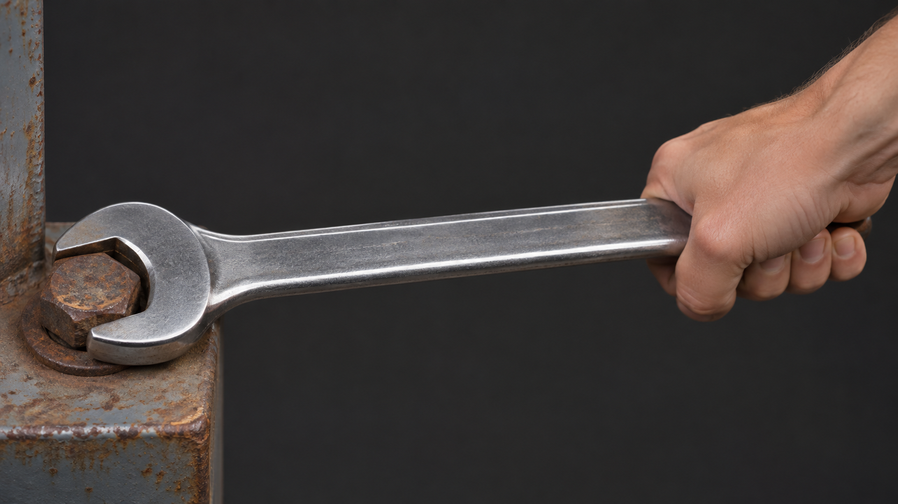
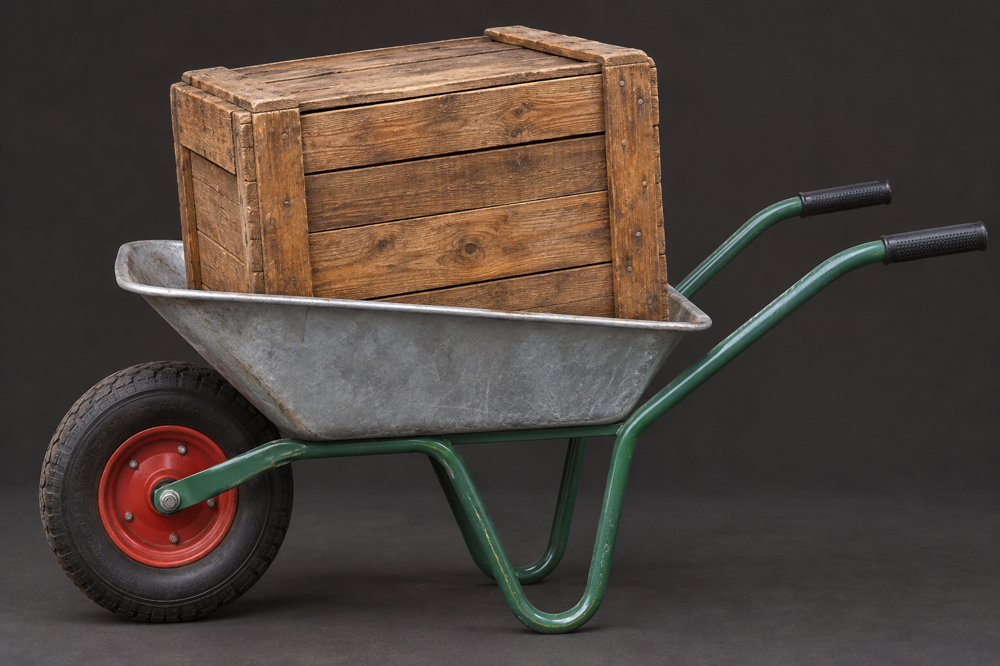

MISSION 08 · DREI STATIONEN
Kraft sparen im Alltag
Wählt an jeder Station die Lösung, mit der möglichst wenig Kraft benötigt wird. Erst der gemeinsame Check wertet eure Antworten aus.
Station 1 – Die fest sitzende Holzkiste
Eine schwere Holzkiste muss mit einer Brechstange geöffnet werden. Die Brechstange lässt sich an drei unterschiedlichen Stellen auf einer festen Unterlage abstützen. Welche Position des Drehpunkts ist am günstigsten?

Station 2 – Die fest sitzende Schraube
Ein Schraubenschlüssel reicht nicht aus, um eine Schraube zu lösen. Was ist am günstigsten?

Station 3 – Die schwere Ladung
Eine Schubkarre ist schwer zu heben. Wo sollte die Ladung liegen?

Mission erfolgreich!
Alle drei Hebel-Stationen sind richtig gelöst.
Alle drei Hebel-Stationen sind richtig gelöst.